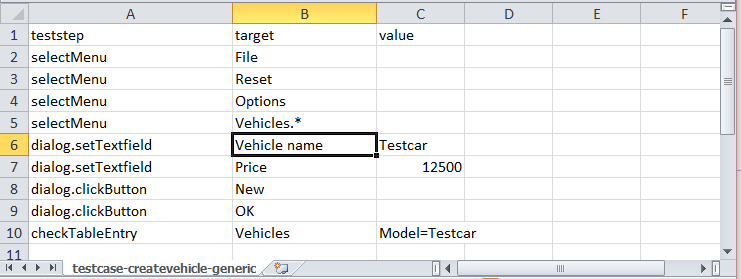
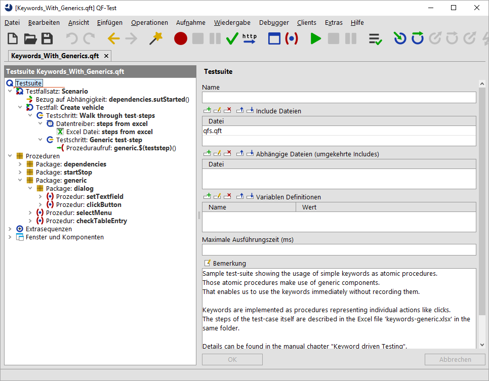

| Version 6.0.3 |
Im vorigen Abschnitt haben wir gesehen, wie schlüsselwortgetriebenene Tests anhand einer Testplanung unterschiedliche Prozeduren aufrufen können. Allerdings ist hierbei die Erkennung der grafischen Komponenten noch in den QF-Test Prozeduren geblieben. Dieser Ansatz erfordert, dass jede Prozedur entsprechend vorab aufgezeichnet bzw. anderweitig erzeugt wird.
Es gibt allerdings noch die Möglichkeit die Information für die Komponentenerkennung auch in die Testplanung mitaufzunehmen
und entsprechend in QF-Test zu interpretieren. Das dazugehörige Beispiel finden Sie unter
qftest-6.0.3/demo/keywords/generic/Keywords_With_Generics.qft.
Der dazugehörige Testplan liegt unter qftest-6.0.3/demo/keywords/generic/keywords-generic.xlsx.
Bitte achten Sie darauf, dass Sie den Ordner in ein projektspezifisches Verzeichnis kopieren und diese dort modifizieren.
Grundlage dieses Verfahrens ist die generische Komponentenerkennung von QF-Test. Dieses Verfahren erlaubt es Ihnen Variablen in die aufgezeichneten Komponenten einzufügen, und sogar noch Komponenten aus der aufgezeichneten Hierarchie zu lösen., siehe Abschnitt 5.8.
Wenden wir uns wieder unserem Beispieltestfall zu. Der Testfall "Fahrzeug anlegen", wird nun wie folgt beschrieben:
Wie Sie sehen, wird der Testfall genau so beschrieben, wie bei den atomaren Prozeduren im vorigen Abschnitt.
Die Exceldatei hierzu sieht wie folgt aus:
|
|  | ||
|
| Abbildung 27.4: Exceldatei generische Komponenten | ||
In dieser Exceldatei sehen wir nun, dass die Werte für teststep auf Werte wie selectMenu oder dialog.clickButton gesetzt sind.
Des Weiteren ist eine neue Spalte target hinzugekommen. Diese Variable werden wir in den nächsten Absätzen genauer erklären.
Wie wir in den vorigen Abschnitten schon gelernt haben, sollten hierfür entsprechende Prozeduren in der Testsuite qftest-6.0.3/demo/keywords/generic/Keywords_With_Generics.qft
bestehen. Diese finden wir unter dem Package generic.
Bitte achten Sie darauf, dass Sie den Ordner in ein projektspezifisches Verzeichnis kopieren und diese dort modifizieren.
|
|  | ||
|
| Abbildung 27.5: Testsuite generische Komponenten | ||
Werfen wir kurz einen Blick auf die Prozedur selectMenu. Diese Prozedur besteht aus einem Mausklick auf die Komponente GenericMenuItem.
Wenn wir nun zu der entsprechenden
Komponente springen sehen wir, dass diese Komponente nur einen Wert für das Attribut Klasse besitzt, nämlich MenuItem, keinen Wert für Name und Merkmal,
danach einen Wert für das Weitere Merkmal qfs:label mit dem Status Muss übereinstimmen und dem Wert $(target). Das Attribut
Struktur ist leer und bei den Werten für Geometrie steht ein '-'. Details zum '-', siehe Abschnitt 5.8.
Diese Definition bedeutet nun, dass die Erkennung dieser Komponente vom Inhalt der Variable target abhängt. Diese Variable wird für das qfs:label verwendet.
Das weitere Merkmal qfs:label steht für die Beschriftung der Komponente, z.B. bei MenuItems oder Buttons oder für eine Beschriftung in der Nähe, z.B. bei Textfeldern.
Wenn wir uns nun noch einmal der Exceldatei zuwenden, werden wir sehen, dass in der Spalte target genau diese beschreibenden
Texte der jeweiligen Komponenten stehen. Bei den anderen Komponenten ist das Vorgehen ähnlich.
Eine zweite Aufälligkeit ist das Package dialog unter dem Package generic. Grund hierfür ist, dass QF-Test für die Erkennung der Komponenten nicht nur die eigentliche
Komponente, sondern auch immer das Fenster oder den Dialog mit in Betracht zieht. Bei Fenstern und Dialogen gibt es zwei Kategorien. Normale Fenster, die die Eingabe auf weiteren Fenstern nicht
blockieren und so genannten modale Fenster, die die Eingabe auf weiteren Fenstern blockieren. Es ist in der Regel einfacher diese zwei Fensterkategorien über unterschiedliche Keywords
anzusprechen. Man könnte allerdings auch dies noch weiter verallgemeinern. Bei Webanwendungen muss diese Unterscheidung nicht getroffen zu werden,
weil sich alle Komponenten unterhalb einer Webseite befinden.
In diesem Abschnitt haben wir also gesehen, wie man die Komponentenerkennung mit Variablen versehen kann, um nur noch eine Prozedur pro Aktion und Zielkomponente anzulegen. Dies erlaubt es den gesamten Test in Excel zu definieren. Die notwendigen Prozeduren samt generischer Komponenten müssen noch am Anfang des Projektes angelegt werden. Natürlich kann dieser Ansatz mit aufgezeichneten Prozeduren ergänzt werden. Diese Prozeduren können wie im Abschnitt für fachliche Prozeduren (siehe Abschnitt 27.2.1) angesprochen werden.
| Letzte Änderung: 6.9.2022 Copyright © 1999-2022 Quality First Software GmbH |